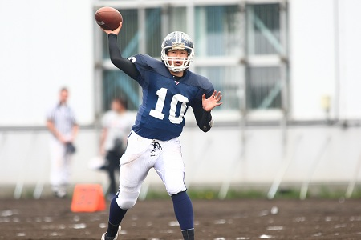

オフェンス
オフェンスとはボールを持って攻撃しているチーム。相手のエンドゾーンまでボールを進め得点することを目指す。
オフェンスライン
オフェンスの要。センター（C）1人、ガード（G）2人、タックル（T）2人からなる5人のユニット。自らの体を犠牲にしてディフェンスをブロックする。ランプレイではRB（ランニングバック）の走路を切り拓き、パスプレイではパスを投げるQB（クォーターバック）を守る。 ボールを持つことができないポジションのため、TD（タッチダウン：6点）のような華やかなプレイとは無縁だが、彼ら5人のコンビネーション、献身的なプレイなくしてオフェンスが前に進むことはない。まさに心優しい縁の下の力持ちたち。
クォーターバック
オフェンスの司令塔。パスを投げたり、ボールをRB（ランニングバック）に渡したりそして時には自分でボールを持って走ったり、オフェンスはまさにQB中心に展開していく。 肩の強さとパスの正確なコントロールに加え、強力なリーダーシップとディフェンスを的確に読む頭脳、さらには一瞬の判断力など様々な能力を要求されるアメフトの花形ポジション。
ランニングバック
地上戦の主役。時には勇敢に相手ディフェンスに突進し、時には華麗なステップで相手ディフェンスを翻弄しながらボールを少しでも前進させる。 爆発的なスピードのみならず、激しいタックルにも負けないタフさ、さらには味方の切り拓く走路を見いだす能力も必要とされる。プレイによってはレシーバーとしてパスキャッチもこなす、無敵のアスリート。
ワイドレシーバー
空中戦の主役。パスプレイでQB（クォーターバック）のターゲットとしてオフェンスの両翼をなす。 相手ディフェンスのマークを振り切るスピードはもちろん、空中戦を制するジャンプ力と確実なキャッチ力、さらには正確にパスルートを走る能力も必要とされる。WRが相手ディフェンスを振り切り、ロングパスレシーブを決めるシーンはまさに鳥肌もの。風を切ってフィールドを疾走するチーム1のスピードスター。
タイトエンド
1人2役の頼れるジョーカー。時にQB（クォーターバック）やRB（ランニングバック）をサポートするOL（オフェンスライン）の一翼を担い、時にレシーバーとして華麗にパスキャッチを決める。 巨大DL（ディフェンスライン）に対抗する頑強な体とパスレシーブのため相手ディフェンスを振り切るスピードを持つオフェンス最強のオールラウンダー。
ディフェンス
ディフェンスとはボールを持たない側のチームで、オフェンスが得点するのを止めようとする。また、ディフェンスはボールを持った選手のファンブル（ボールを落とすこと）を誘ったり、相手の投げたパスをインターセプト（横取り）することでボールを奪おうとする。
ディフェンスライン
ディフェンスの切り込み隊長。ディフェンスの最前線で奮闘する通常4人からなるユニット。DE（ディフェンスエンド）2人が外側を、DT（ディフェンスタックル）2人が真中を固める。 爆発的なスピードとパワーで、オフェンスのQB（クォーターバック）、RB（ランニングバック）という獲物に襲い掛かる。そんな野性的なプレイスタイルが信条のディフェンス最凶の4人衆。
ラインバッカー
ディフェンスの司令塔。ディフェンスの中央に位置し、縦横無尽にフィールドを駆け巡る通常3人からなるユニット。 オフェンスのプレイを最後まで冷静に見極め、ディフェンス全体に指示を出す強力なリーダーシップを要求される。さらにパス、ランどちらのプレイでも瞬時に反応する俊敏さ、そして強烈なタックルで相手オフェンスを打ちのめす激しさを持ちあわせるディフェンス最強のタックルマシーン。
コーナーバック

最速のディフェンダー。WR（ワイドレシーバー）をピタリとマークし、オフェンスのパスプレイを封じ込める2人のコンビ。 CBのちょっとしたミスが相手のビッグプレイにつながるだけに、その責任は重大。その分、自らのインターセプトによって、ゲームの流れを大きく変えることもある。圧倒的なスピードと運動能力を武器とするディフェンス最高のアスリート。
セーフティ
ディフェンス最後の砦。ディフェンスの最後尾に位置するSS（ストロング・セイフティ）とFS（フリー・セイフティ）の2人のコンビ。 パス、ラン、どちらのプレイにも対応する能力が求められ、特にSSはFSよりやや前に位置して後方からフルスピードでランプレイを潰す。激しいプレイスタイルの中にもフィールド全体を見渡しながら状況を冷静に分析し、危険をいち早く察知する嗅覚が求められるディフェンスの守護神。